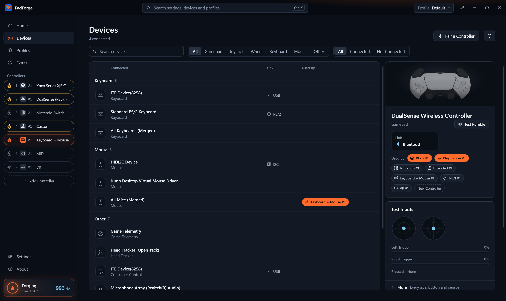
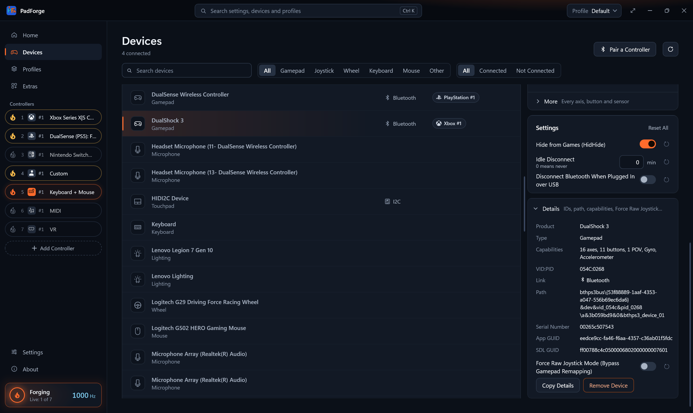
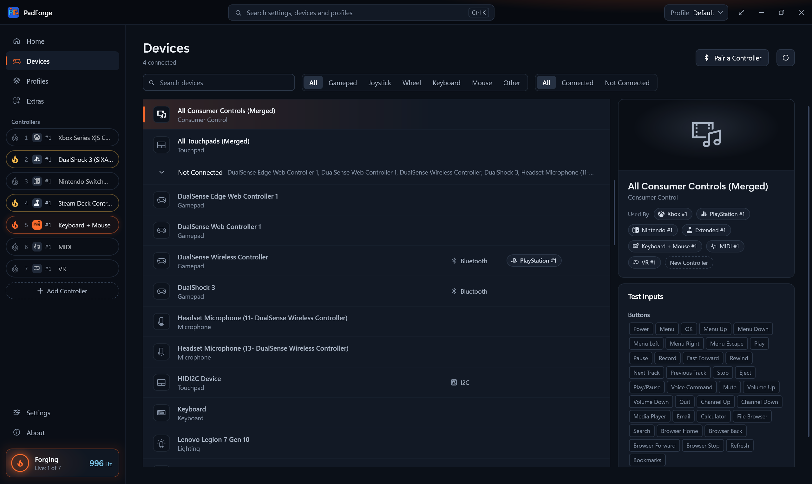
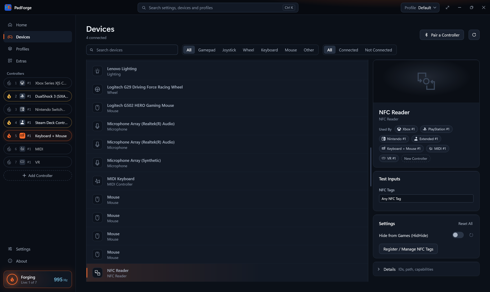
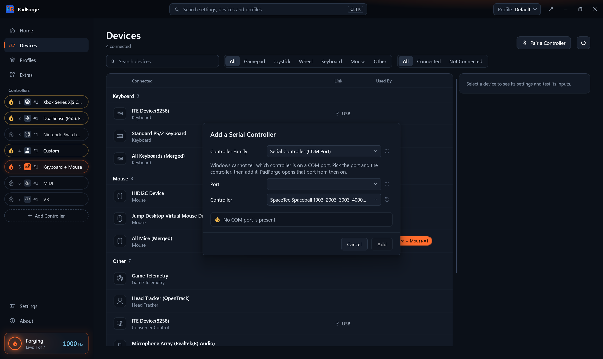
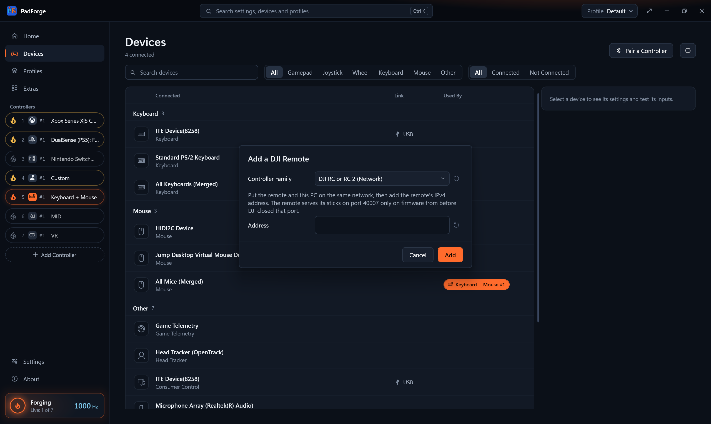
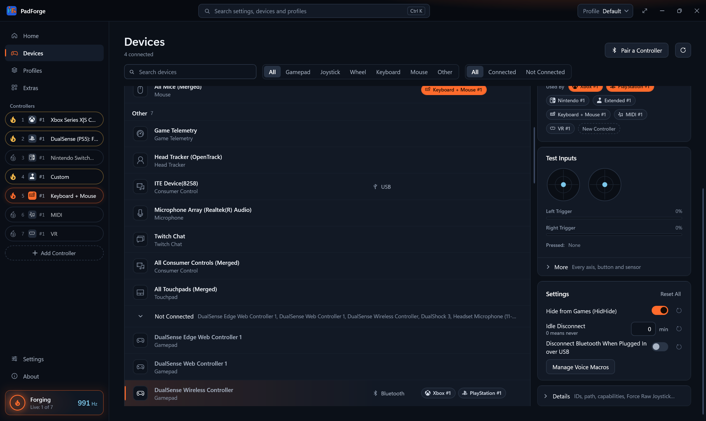
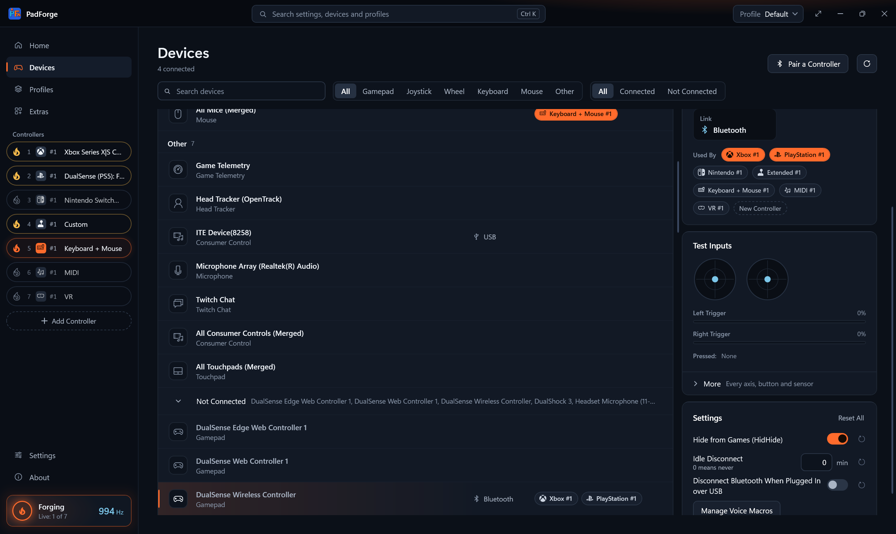

Devices¶
Every gamepad, joystick, keyboard, mouse and touchpad PadForge can see is a row on this page.

Page layout¶
| Area | What it holds |
|---|---|
| Head | The title, N connected under it, Pair a Controller (Wii controllers, DualShock 3, PS Move / Navigation, serial controllers and DJI remotes), and a refresh button (tooltip "Refresh"). |
| Filter row | Search devices, the Show segments and the connection segments. |
| Device table | The connected devices, in parts by kind, then a folded Not Connected line for the devices PadForge remembers. |
| Panel | The selected device: its picture, name and type, link and battery, Used By, Test Inputs, Settings and Details. With no device selected it reads "Select a device to see its settings and test its inputs." |
The table and the panel stand side by side and scroll on their own while the window is wide. On a narrow window the panel stands under the table and the page scrolls as one.
The device table¶
Search and segments¶
Search devices finds a device by its name, its product's name, its type and its VID:PID, ignoring case.
The Show segments pick the kinds of device shown: All, Gamepad, Joystick, Wheel, Keyboard, Mouse and Other. Gamepad covers standard pads and First Person and Supplemental devices. Joystick covers joysticks and flight sticks. Keyboard covers keyboards and analog keyboards. Other holds everything else: touchpads, drawing tablets, MIDI devices, NFC readers, Consumer Control devices, microphones, Web Menus phones, the rows PadForge and the extras feed, and anything unclassified.
The connection segments pick All, Connected or Not Connected. Under All and Connected the table lists the connected devices and the Not Connected fold holds the rest. Under Not Connected the table lists the devices PadForge remembers and cannot see.
The table stands in parts, one for each kind, in the segments' order, each under its name and its count. A part with no row is left out. Within a part, rows sort by name, then by Vendor ID, then by Product ID, and a merged row (All Keyboards, All Mice, All Touchpads, All Consumer Controls) comes last. "No devices match." shows when the search and segments leave nothing.
Rows¶
Every row is 64 pixels tall, a keyboard's and a mouse's as a controller's, with the device's type under its name.
| Part | Description |
|---|---|
| Kind tile | The device's kind on a square tile, lit while the device is sending input. |
| Name and type | The name the hardware reports (such as "Xbox Wireless Controller"), and under it the type: Gamepad, Joystick, Wheel, Flight Stick, First Person, Supplemental, Mouse, Keyboard, Touchpad, Drawing Tablet, NFC Reader, Consumer Control, MIDI Controller, Microphone, Headset Tracker, Handheld Buttons, System Motion, Head Tracker, VR Controller, Logitech G-Keys, Keyboard Screen, Novint Falcon, Analog Keyboard, Web Menus, Game Telemetry, Twitch Chat, Haptics, Lighting, or Device for anything unclassified. Merged rows read "All Keyboards (Merged)", "All Mice (Merged)", "All Touchpads (Merged)" or "All Consumer Controls (Merged)". |
| Link | Bluetooth, USB, PS/2 or I2C, where PadForge knows it. A wireless receiver reads USB. A virtual device has none. |
| Battery | A meter and the percentage for a connected device that reports a battery level, in gold with the word Low at or under the low level set in Settings. The meter shows a charging mark while the device charges. |
| Used By | A pill for each virtual controller that uses the device, with the type's mark and its number within the type, such as Xbox #1. Ember means the device is in use now. On a device that is not connected the pill is steel. A connected game controller that nothing uses shows Use It in its place while a controller can still be added. It opens Add a Controller, and the controller made there takes the device. |
| Remove (X) | Shows while the pointer is on the row or the X has the keyboard focus. Tooltip: "Remove this device and its settings". |
Where the table is too narrow for Link and Battery as columns, the two follow the type on the row's second line and Used By keeps its column.
Click a row to select it. The selected row has an ember bar at its start and a warm wash that fades toward its end. Drag a row onto a controller in the sidebar to assign the device to it. The line under the table says so: "Drag a device onto a controller in the sidebar to assign it."
Devices that report no battery (wired pads without one, most wired sticks and wheels) and devices that are not connected show no battery. A battery-equipped pad on a USB cable shows the charging mark. The same percentage appears beside the device's name on its controller's card on Home, so you can read a controller's charge without opening the Devices page.
Removing a device¶
The X opens a Remove Device confirmation: "Name will be removed from the device list and its saved settings forgotten." Click Remove and the device and all its settings (mappings, assignments, hiding) are deleted. A keyboard screen's choices go with it, and a Bliss-Box port's go back to the defaults. The virtual controller stays. It just loses that device. Remove Device at the foot of the panel's Details card does the same.
If the device is still plugged in, it comes back on the next scan as a fresh device with no settings.
The device panel¶
Head¶
The panel opens with the device's picture on a stage, its name as a large heading and its type under it. Test Rumble rumbles the device so you can tell which one it is. Tiles for Link and Battery follow where the device has one to show, and the battery's tile has a gold edge while the charge is low.
Lines about the device stand under the name when they apply: a Bliss-Box port's player number, controller and firmware, what draws a keyboard screen, how a Novint Falcon runs, a Razer analog keyboard waiting for Razer Synapse, a handheld's own tool still reacting to its buttons, the Flydigi Space Station service, the Head Tracker's, Game Telemetry's and Twitch Chat's status, and what a game mod sets on the controller.
Used By¶
Used By lists a chip for each virtual controller, named by type and number. A click on a chip puts the device on that controller or takes it off (tooltip: "Assigns this device to this controller, or takes it off."). More than one chip can be on at the same time (see Multi-controller assignment). New Controller after the chips opens Add a Controller for this device while a controller can still be added.
Test Inputs¶
Test Inputs shows what the device sends now. A device in SDL's gamepad layout shows its two sticks, its two triggers and the buttons held now ("None" while nothing is), and the full readout opens under More ("Every axis, button and sensor"). Every other device's card is its full readout. See Raw input.
Settings¶
The Settings card holds the device's own settings, with Reset All for what it shows. The rows appear only for devices they apply to:
- Hide from Games (HidHide) and Consume Mapped Inputs (Hooks), or Use Only in PadForge and its restore. See Input hiding.
- Idle Disconnect and Disconnect Bluetooth When Plugged In over USB. See Power.
- Read Arrows One by One for a PlayStation pad on a Bliss-Box port.
- Gun Calibration for a light gun. See Light gun.
The device's tools stand at the card's foot: the Switch Driver buttons, Read as iCade Controller and Read as Keyboard, Read as Tekken Sticks and Read as Taiko Drums, Register / Manage NFC Tags, Manage Voice Macros, Manage Chat Commands, Learn / Manage Hidden Buttons, Map Key Lights, the Bliss-Box port's actions, a keyboard screen's button, Controller Screen… for a Flydigi pad with a screen, and Calibrate Reach for a Novint Falcon.
Details¶
Details is folded to one line at the panel's foot, with the hint "IDs, path, capabilities", or "IDs, path, capabilities, Force Raw Joystick Mode" where that switch applies. Open, it lists every identity field PadForge holds for the device. A row whose fact the device does not report is left out: a device with no link has no Link row, one that reports no serial number has no Serial Number row, and one with no path has no Path row.

| Row | Description |
|---|---|
| Product | Product name from hardware |
| Type | Device category |
| Capabilities | The axis, button and POV counts, each in the singular when it is one ("1 axis, 12 buttons, 1 POV"), then Rumble, Gyro, Accelerometer, Touchpad (a gamepad with a touch surface) and NFC (a Switch controller with a tag reader) where the device has them |
| VID:PID | Vendor and Product ID in hex (054C:0CE6 for a DualSense). Left out for merged and virtual sources that report no ID. |
| Link | Bluetooth, USB, PS/2 or I2C, as the Link tile names it. Bluetooth keeps its mark. |
| Battery | The level as a picture, the percentage, and charging when it is. Shown only when the device reports a battery. |
| Path | HID path used for HidHide hiding. A bridged device (such as a DualShock 3 over Bluetooth) shows its connection path here instead, and a merged row or a row PadForge builds itself shows its internal address, such as aggregate://keyboards or headtrack://opentrack. |
| Serial Number | The serial number the device reports (a Bluetooth MAC address on most wireless pads). A Wii Remote on a Mayflash DolphinBar reports none, so PadForge builds one from the remote's factory calibration: wiical- and the calibration bytes in hex. See Wii Controllers. |
| Firmware | The firmware version of the open device. See Firmware and revision. |
| Revision | The product revision: the USB release number, such as 0x0100, or the PnP ID version over Bluetooth LE. |
| App GUID | The identity PadForge builds for the device, from its serial number when it reports one and from its path otherwise. How the GUID is built has the full order. It is what keeps a device's settings across reboots and re-plugs. |
| SDL GUID | The 32-character hex string SDL uses to look up the device's mapping. Shown when the device reports one. |
Force Raw Joystick Mode (Bypass Gamepad Remapping) follows the rows where it applies. See Force Raw Joystick Mode.
Three buttons close the card: Copy Details, Submit Device Mapping (only for devices PadForge does not already recognize) and Remove Device.
Copy Details copies the record to the clipboard as text for a bug report, under fixed English labels: PRODUCT, TYPE, CAPS, APP GUID, SDL GUID, PATH, VID:PID, LINK, SERIAL, FIRMWARE, REV and BATT. A fact the device does not report is left out. LINK names every link: BT, USB, PS/2 or I2C. BATT adds CHG while the device charges.
Firmware and revision¶
Firmware and Revision read from the open device, so a device that is not connected shows neither. Each hides when the device reports nothing.
| Device | How Firmware reads |
|---|---|
| DualSense and DualSense Edge | Hex around a dot, so 0x0224 reads 2.24 |
| Xbox pads on the GIP and Xbox One drivers, Switch pads over Bluetooth | Decimal major and minor, so 0x0505 reads 5.5 and 0x0348 reads 3.72 |
| Xbox pads on the XInput driver whose device GameInput lists | All four parts of GameInput's version |
| An Xbox pad or other Bluetooth LE pad that reports no version to SDL | The Firmware Revision String of its Device Information service, such as 5.23.6.0, read while the pad is connected |
| Flydigi pads and other makers' devices | Raw hex, such as 0x0123 |
PadForge reads the version again every five seconds, so one the pad reports after it opens reaches the panel. Third-party Xbox and Switch pads show raw hex.
Submit Device Mapping button¶
Shows in the Details card for any device PadForge does not already recognize. It is hidden for known gamepads, keyboards, mice, touchpads, drawing tablets, MIDI devices, NFC readers, headset motion trackers, Consumer Control devices, microphones, analog keyboards, Web Menus phones, Novint Falcons, and the Hidden Buttons, System Motion, Head Tracker, VR Controller, Logitech G-Keys, keyboard screen, Game Telemetry, Twitch Chat, Lighting and Haptics rows. Everything else gets the button, so joysticks, wheels, flight sticks and unclassified HID devices all qualify.
Click it. Your browser opens a GitHub issue pre-filled with every field PadForge can read from the device:
- Device name
- USB Vendor ID (hex)
- USB Product ID (hex)
- SDL GUID (the 32-character hex string SDL uses to look up mappings)
- Axis count
- Button count
- Hat / POV count
You fill in the per-input mapping by hand. Which raw axis index is Left Stick X. Which raw button index is A. Read those off Test Inputs while pressing each control.
Once the issue is merged, the mapping ships in the app's built-in controller mapping database and loads on every PadForge install. Future users with the same hardware get the device recognized without further setup.
Why use the button over a blank template¶
The blank Device Mapping issue template makes you type the device identification fields yourself. The in-app button reads them straight from PadForge's live SDL3 enumeration, so the SDL GUID can't be mistyped. Use the button when the device is plugged in.
Switch Driver buttons¶
Five devices can give PadForge more when they run on Windows' WinUSB driver, but the switch takes something away from Windows, so PadForge moves them only when you ask. Selecting one shows a button at the foot of the Settings card:
| Device | Button | What the switch costs |
|---|---|---|
| Xbox 360 wired controller, revisions 1.10 and 1.14 | Read the Chatpad | The controller then works only while PadForge runs, and games see it through PadForge's virtual controller. Every plugged-in controller of this model moves with it, and each needs assigning to its controller again. |
| Microsoft Xbox 360 wireless receiver | Read Chatpads and uDraw Tablets | Every controller and headset on the receiver moves with it, works only while PadForge runs, and needs assigning to its controller again. |
| Intel Wireless Series base station | Read the Gamepads | The Intel wireless keyboard on it stops typing in Windows. |
| Creative Prodikeys | Read the Music Keys | The keyboard's media and sleep keys stop working in Windows. Its typing keys keep working. |
| Logitech iFeel Mouse and iFeel MouseMan | Play Rumble on This Mouse | Windows stops using the mouse as a pointer until its driver is restored. PadForge moves the pointer from it only while PadForge runs and the mouse is assigned to a Keyboard + Mouse virtual controller. One mouse of a model moves at a time, so unplug the others of that model first. See Logitech iFeel mice. |
A Switch to PadForge’s Driver confirmation states the cost before anything moves. Once a device is on PadForge's driver, the same place shows Restore the Windows Driver, which removes PadForge's driver package and puts every device it served back on its Windows driver. A few seconds into each start, PadForge names any of these devices that Windows moved back on its own.
A USB keyboard or mouse takes the same switch, named Use Only in PadForge, and its button stands with the hiding rows of the Settings card. See Use Only in PadForge.
Pads in iCade mode¶
A pad in iCade mode pairs as a Bluetooth keyboard and types one letter when a button goes down and another when it comes up. The ION iCade cabinet reads as a controller on its own. For any other pad, select its keyboard's row and click Read as iCade Controller. The keyboard's row goes offline, and an iCade Controller row takes its place with a gamepad layout: A on Back, B on the left shoulder, C on Start, D on the right shoulder, E, F, G and H on the face buttons. Read as Keyboard, on either row, turns it back into a keyboard. The letters still reach the program in the foreground, because Windows still sees a keyboard. PadForge keeps up to 32 keyboard IDs in iCade mode and reads up to eight iCade devices at a time, the ION iCade cabinet included.
Namco USIO layout¶
One USB ID serves the Namco USIO boards of Taiko no Tatsujin and Tekken cabinets, and each game lays out the board's inputs its own way. PadForge reads the board as two Taiko drums until told otherwise. Select a drum's row and click Read as Tekken Sticks to read four arcade sticks instead. Read as Taiko Drums, on a stick's row, goes back. The board opens again in the new layout, so its rows leave and the other layout's arrive a moment later. While the engine is stopped, or paused in the background, the change waits and takes effect when it runs again.
Assigning devices to controllers¶
Used By chips¶
Click a chip under Used By in the panel to put the device on that virtual controller or take it off. A lit chip means assigned.
Assigning a device builds a default mapping if none exists and updates the row's Used By pills. You stay on the Devices page. Open the controller's page from the sidebar when you want to tune the mapping.
Drag and drop¶
Drag a row onto a controller's pill in the sidebar. Same result as turning that controller's chip on.
Use It and New Controller¶
A connected game controller that nothing uses shows Use It on its row, and every device's panel offers New Controller after its chips. Either opens Add a Controller, and the controller you make there takes the device. Both show only while a controller can still be added.
What happens on assignment¶
- A default mapping is built for the device type and output type (Xbox, PlayStation, Nintendo, Extended and the rest)
- For gamepads, joysticks, wheels, flight sticks and First Person devices, Hide from Games (HidHide) turns on if HidHide is installed
- The Used By pills update right away
Unassigning a device from every controller clears both hiding options.
Multi-controller assignment¶
One physical device can feed more than one virtual controller at the same time. Real uses:
- Two output types at once. One pad feeding an Xbox controller for the game and an Extended controller for a flight sim overlay.
- Split button subsets. Left side mapped to one controller, right side to another.
- A/B testing. Compare deadzone, sensitivity or macro setups without swapping hardware.
- MIDI plus gamepad. Game input and MIDI signals from the same pad.
Turn on several chips under Used By. Each controller keeps its own mapping, so the same physical input can mean different things on different controllers. The row's Used By column shows every controller that uses the device.
Raw input¶
Test Inputs in the panel shows live hardware data before any mapping, deadzone or sensitivity work. For a device in SDL's gamepad layout the full readout below opens under More. It updates about 30 times a second while the engine runs.
Axes¶
Each axis row has:
| Element | Description |
|---|---|
| Name | Axis N, numbered by the axis's real slot. In gamepad mode a pad that lacks a stick or trigger skips those numbers, so gaps are normal (a PS Move Navigation reads Axis 0, 1, 2, then 6, 7, 10, and 12 through 15). Raw mode numbers densely from 0. The row never switches to friendly names like LX or LT. The Head Tracker and Game Telemetry rows are the exceptions: the Head Tracker's axes read Head Yaw through Head Z, and Game Telemetry's read Speed, RPM, Throttle, Brake, Clutch, Handbrake, Steering and each custom variable by name. |
| Progress bar | Horizontal, 0-1 range. A centered stick reads ~50%. |
| Raw value | Exact integer (0-65535) on the bar, in tabular figures |
Look for:
- Center drift. The axis does not rest at ~32768 when you let go. Use Calibrate Center in the controller page's Sticks & Triggers section.
- Trigger baseline. Some triggers rest at 0, others at 32768. Depends on hardware and input mode.
- Dead axes. Axis never moves. The mapping database may have a bad entry. Try Force Raw Joystick Mode.
Buttons¶
Small circles in a wrap layout, labeled by index (0, 1, 2...).
| State | Look |
|---|---|
| Released | Dim recessed cell |
| Pressed | Outline and number lit in cold blue, with a glow |
Gamepad mode shows the standard buttons the pad has (0 is A, 1 is B, on through Guide at 10, and a partial pad such as the PS Move Navigation skips the ones it lacks) plus every extended button the pad actually has: Misc1 at 11, paddles at 12–15, touchpad click at 16, Misc2–6 at 17–21. Physical buttons the mapping leaves unclaimed follow from 22 up. Each circle is numbered by its real index, the same number the mapping picker and recorder use, so gaps are normal. A DualSense shows a button 16 for its touchpad click with nothing at 12–15. Raw mode shows every physical button instead, densely numbered from 0. Either way the circles read as numbers, not letters.
Consumer Control and NFC Reader devices replace the numbered grid with named chips (media keys) or named tags, and a microphone replaces it with its voice phrases. The Hidden Buttons, VR Controller, Logitech G-Keys, and keyboard screen rows show a named button list instead, with no axis bars. See their sections below. A Novint Falcon adds a Handle square above its axes, with a dot where the handle is, and names its axes Left/Right, Up/Down and In/Out.
Keyboards¶
A QWERTY layout replaces axes and buttons. Main keys, navigation cluster, arrows, numpad. Keys light up in the same cold blue as the button circles as you press them.
Mice¶
A mouse graphic replaces axes and buttons:
- Button presses highlight on the mouse body
- Motion direction shows visually
- Scroll wheel activity reads as scroll intensity
POV / D-pad¶
Under D-Pad / POV, compass widgets with a direction line, labeled "POV 0", "POV 1" and so on.
| State | Look |
|---|---|
| Centered | Background circle with center dot, no line |
| Direction pressed | Cold blue line from center toward the pressed direction |
All 8 directions are supported (N, NE, E, SE, S, SW, W, NW). Some specialty controllers report continuous angular values.
Gyroscope¶
Shows on devices with a gyro sensor (DualSense, DualShock 4, Switch Pro, others). Rotational velocity. Used by the DSU Motion Server for motion-enabled emulators.
| Axis | Motion |
|---|---|
| X | Pitch (forward / backward tilt) |
| Y | Yaw (left / right rotation) |
| Z | Roll (side-to-side tilt) |
Three decimal places. A still controller reads near 0.000.
A second block, Aux Gyroscope, appears for the left Joy-Con of a combined pair. It sits beside the Aux Accelerometer readout, so you can see which half a reading comes from, and it maps as its own source (Left Joy-Con Gyro Pitch, Yaw, and Roll). Only the Joy-Con pair shows one. The Nunchuk has no gyro.
Accelerometer¶
Shows on devices with an accelerometer. Linear acceleration:
| Axis | Motion |
|---|---|
| X | Left / right |
| Y | Up / down. Gravity registers here, so a still controller reads about 9.8 or -9.8. |
| Z | Forward / backward |
Values are in meters per second squared. Gravity always shows up, so whichever axis points up or down sits near 9.8 or -9.8 at rest. Unlike the gyro, the accelerometer does not settle to zero when the controller is still.
A second block, Aux Accelerometer, appears when a device carries a second sensor: the Nunchuk's own accelerometer, or the left Joy-Con of a combined pair. Same three axes. It maps as its own source.
Touchpads¶
PadForge reads two kinds of touch surfaces on the Devices page.
- Gamepad touchpads. The touch surfaces on DualShock 4, DualSense, Steam Controller, and Steam Deck. SDL3 reports them as part of the gamepad. They show up in Test Inputs with contact position and finger count.
- Windows Precision Touchpad. Laptop trackpads and external precision touchpads. PadForge treats each one as its own row with a live touch preview. It reads no click from these trackpads, so no click input appears for them in the mapping picker or auto-map.
Surface count comes from SDL. Most pads report one. The Steam Controller 2026, the Steam Deck, and the 2015 Steam Controller each report two. A multi-surface device shows a separate live preview per pad, labeled Touchpad 1 and Touchpad 2 in Test Inputs. The Devices page draws at most those two previews. Every surface still maps.
Pressure maps too on gamepad touchpads. Each finger gets a Touchpad N Finger M Pressure source in the mapping picker, and pads that report a touch as full pressure (DualShock 4, DualSense, Steam Controller 2015) can shape it with the per-device Enable Synthetic Pressure option in the touchpad settings of the controller page's Motion & Touch section. A Windows Precision Touchpad reports no pressure, so it gets no Pressure source.
A third and fourth source live elsewhere: Web Controller clients in touchpad-only or DS4-with-touchpad mode, and the on-screen Touchpad Overlay. All four feed the same per-controller configuration in the touchpad settings of the controller page's Motion & Touch section.
MIDI devices¶
A connected MIDI keyboard, pad controller, or control surface shows up here as its own row. Select it and Test Inputs shows a live preview: a piano that lights the notes you play and vertical sliders that follow the knobs and faders. Its notes, Control Change knobs, pitch bend, and encoder dials map like any button or axis.
MIDI input runs on Windows MIDI Services, the same API the MIDI virtual controller uses, or without it on the legacy MIDI API. Under the legacy API a MIDI device's port opens only while a virtual controller has the device assigned, so its preview stays still until then. See MIDI Input for the full list of what maps.
Analog keyboards¶
With Read Analog Keyboards on in Settings, each supported analog or Hall effect keyboard gets a row of its own, typed Analog Keyboard, beside its normal keyboard row. Select it and Test Inputs shows a Key Depth readout in place of the axes and button grid. Each key you press joins it with a bar and a percentage for how far down it is. Every key maps as a button, a trigger or one side of a stick axis. See Analog Keyboards.
The row reads a vendor interface beside the keyboard, so it has no hiding rows and no Force Raw Joystick Mode. A Razer keyboard that waits for Razer Synapse says so in its own panel.
Bliss-Box ports¶
With Read Bliss-Box Adapters on in Settings, a Bliss-Box port's panel carries a line with its player number, the controller in it and the adapter's firmware, and the port's actions: Player Number…, Dreamcast Screen… for a Dreamcast pad, Back Up Controller Pak… and Restore Controller Pak… for an N64 controller on an adapter with firmware 3.0 or later, and Read Arrows One by One for a PlayStation digital pad or dance mat on a 3.x adapter. In the mapping picker the port's buttons take the names of the controller plugged in, assigning the port maps that controller the way SDL maps its console's pad, and a DualShock 2 adds a DualShock 2 Pressure readout to Test Inputs. See Bliss-Box Adapters.
Keyboard screens¶
With Drive Keyboard Screens on in Settings, each keyboard screen is its own row: one for each monochrome keyboard and G19 plugged in, one for Logitech Arx Control and one for the S.T.R.I.K.E. 7. A screen's panel carries a line that says what draws the screen or why nothing does, and a button named for the kind of screen, Monochrome Screen…, Color Screen…, Arx Control… or S.T.R.I.K.E. 7…, which opens the dialog that sets what that screen shows. Two keyboards with screens keep their own settings. See Keyboard Screens.
Novint Falcons¶
With Drive Novint Falcon on in Settings, each open Falcon's panel carries a line with its name and how it runs, a homing prompt for its first seconds and then its rate, and Calibrate Reach, the four-second sweep that measures how far its handle travels. The reach belongs to the Falcon, so every virtual controller it feeds uses it. See Novint Falcon.
Game Telemetry¶
With Listen for Game Telemetry on, on the Game Telemetry page of Extras, the Game Telemetry row carries the speed, RPM, gear and pedals a driving game sends. Its axes are Speed, RPM, Throttle, Brake, Clutch, Handbrake and Steering, then one per custom variable, and its buttons are Driving, Reverse, Neutral and Gear 1 to Gear 18. The panel shows the same status line as the extra's page, such as Listening on UDP port 20777. F1 25 from 127.0.0.1. The row stays listed with no game running, so you can map it first. See Game Telemetry.
Twitch Chat¶
With Read Twitch Chat on, on the Twitch Chat page of Extras, the Twitch Chat row carries the words viewers type in your channel's chat. Each word is a button on the row, mapped like any input, so assign the row to a virtual controller like any device. The row exists while the engine runs and the switch is on. Its panel shows a status line, such as Reading yourchannel's chat., and a Manage Chat Commands button that opens the Chat Commands dialog, where you add words and Restore Usual Words. A peer's shared copy of the row is managed on its owner. See Twitch Chat.
Map Key Lights¶
A connected keyboard or other device that PadForge lights one light at a time, at least one of them a key, shows a Map Key Lights button in its panel. The button opens a window that lights one key light at a time. Press the key under the lit light to name it. The names are kept for every device of that model. The device does not have to be assigned to a virtual controller, and the input engine has to run. A device reached through Remote Link is mapped on the PC it is plugged into. See Map Key Lights.
Game mods¶
While a game mod made for DSX sets something that reaches a controller, the controller's panel names the mod's program and what it sets, such as GTA5.exe is setting this controller’s triggers and lights. A DualSense shows its triggers and lights, a DualShock 4 its lightbar, and an Xbox controller with impulse triggers the trigger vibrations it plays while Translate Adaptive Trigger Vibrations is on. Clear Mod Effects below the line ends what the mods set on every virtual controller this device feeds, and the controllers' own settings return until a mod sends again.
Consumer Control devices¶
Media keys show up here as their own row, typed Consumer Control. A keyboard's media row, a standalone media remote, and a headset's media buttons all land here.

Select the row and Test Inputs shows named button chips instead of the numbered-button grid: Play/Pause, Mute, Volume Up, Volume Down, Next Track, Previous Track, and the rest of PadForge's standard media, menu, and browser keys, whether or not this device has them. A key outside that set gets a chip named by its usage code once a device on this PC sends it. A chip lights up in cold blue while its key is held.
Each named media key maps as a source and works as a macro trigger. These devices have no sticks or triggers. Consume Mapped Inputs does not apply to them, so that switch is left out.
NFC readers¶
A contactless smart-card / NFC reader (PC/SC class, such as an ACR122U) shows up as a row typed NFC Reader.

The panel has a Register / Manage NFC Tags button. It opens a dialog where you tap a tag to capture it, then give the tag a name. Each registered tag becomes its own button you can map, alongside an Any NFC Tag button that any tag triggers. Test Inputs lists your named tags and highlights the one you just tapped.
The deep how-to (registering, naming, and mapping tags) lives on NFC Tags.
Microphones¶
Every active Windows microphone, the one in a wired DualSense included, shows up as a row typed Microphone. The panel has a Manage Voice Macros button, and Test Inputs has a Voice Macros list in place of the numbered-button grid: Any Phrase plus one row per registered phrase, each lighting as its phrase fires. A DualSense on Bluetooth carries the same button and list on its own row. See Voice Macros.
Web Menus phones¶
A phone that opens the web controller's Web Menus layout shows up as a row typed Web Menus, named Web Menus 1, then 2 for a second phone. It has no axes, buttons, or hats, so it adds nothing of its own to a slot's mappings. What it carries is taps: assign it to a virtual controller and its tiles fire that controller's Touch Grid menus. Remote Link does not offer it to a paired PC.
Machine and tracker rows¶
Seven rows on this page come from the PC itself or from a program on it, not from a plugged-in device. Each has no HID path, so the hiding rows and Force Raw Joystick Mode are left out of its panel, and none of them offers Submit Device Mapping.
| Row | Type | Where it is turned on | What it carries |
|---|---|---|---|
| Your machine Hidden Buttons | Handheld Buttons | Enable Handheld PC Buttons in Settings | One button per paddle or key you have learned, at a stable index. Test Inputs lists them by name and lights each one while it is down. A Learn / Manage Hidden Buttons button opens the learn dialog. |
| Your machine Motion | System Motion | The same Settings switch. Appears only when Windows reports a gyroscope. | The machine's gyroscope and accelerometer as a motion source |
| Head Tracker (OpenTrack), or Head Tracker (OpenXR) when OpenXR is its only input | Head Tracker | Any of the three inputs on the Head Tracking page of Extras | Six absolute axes, Head Yaw through Head Z, with a status line that says which source is live |
| VR Controller (Left) and VR Controller (Right) | VR Controller | Enable OpenXR Headset Input on the Head Tracking page of Extras | Six pose axes in the head tracker's convention, plus a thumbstick, a trigger, a grip and four buttons. Each hand is its own row, so one going to sleep leaves the other alone. See VR Controller Input. |
| Logitech G-Keys | Logitech G-Keys | Read Logitech G-Keys in Settings | The G-keys and extra mouse buttons on Logitech gaming gear, read through the vendor SDK. See Logitech G-Keys. |
| Logitech G15 Screen, Logitech G19 Screen, Logitech Arx Control, Mad Catz S.T.R.I.K.E. 7 Screen and the like | Keyboard Screen | Drive Keyboard Screens in Settings | One row per screen: the keys beside it, five on a monochrome screen and eight on a G19, none on Arx Control or the S.T.R.I.K.E. 7, and the button that sets what it shows. See Keyboard Screens. |
| Novint Falcon | Novint Falcon | Drive Novint Falcon in Settings | The handle's Left/Right, Up/Down and In/Out and the grip's four buttons, one row per Falcon, opened through Force Dimension's library, with its line and Calibrate Reach in its panel. See Novint Falcon. |
The machine name in the first two rows is the product name the firmware reports, or the family name when the product name is a bare model code. See Handheld PC Buttons and Head Tracking for setup.
A drawing tablet is not in this group. Windows HID pen and digitizer devices are real HID devices, so they enumerate normally and keep their hiding rows.
Pairing a controller¶
Pair a Controller in the page's head opens the Pair a Controller dialog. A Controller Family selector offers Nintendo Wii, Sony DualShock 3, PlayStation Move / Navigation, Serial Controller (COM Port) and DJI RC or RC 2 (Network).
The Wii family walks a Wii Remote, Nunchuk, Classic Controller, or Wii U Pro Controller through Bluetooth pairing. The Windows pairing wizard can't pair these on its own, since their PIN is raw bytes rather than a typed code, so PadForge runs the handshake itself. See Wii Controllers for the pairing steps and the per-controller button layouts.
The DualShock 3 family pairs over USB: connect the controller with a cable, click Pair in the dialog, and PadForge writes this PC into the controller. Unplug it and press the PS button to connect over Bluetooth. See DualShock 3.
The PlayStation Move / Navigation family pairs over USB the same way. PadForge writes this PC into the controller, saves the Move's motion calibration, and registers it. Unplug it and press the PS button to connect over Bluetooth.
The Serial Controller (COM Port) family adds a controller on a serial port. Windows cannot tell which controller a COM port carries, so pick the Port and the Controller, then click Add. PadForge opens that port from then on, and Added Controllers lists each one with a button that removes it. Adding a controller to a port that already has one replaces it. PadForge reads up to 16 serial controllers.

| Controller list entry | What it is |
|---|---|
| SpaceTec Spaceball 1003, 2003, 3003, 4000 FLX | Six-axis ball with 12 buttons. The 2003B, 2003C and 3003C take this entry too. |
| SpaceTec SpaceOrb 360, SpaceBall Avenger | Six-axis ball with 7 buttons |
| Magellan, SpaceMouse, Spaceball 5000, CadMan | Six-axis puck with 12 buttons |
| Gravis Stinger | Gamepad |
| Logitech WingMan Warrior | Flight stick with a hat. Its spin dial reads as Mouse Motion X. |
| Logitech CyberMan | Six-axis controller with a tactile motor |
| Zhen Hua RC | RC transmitter on the five-byte Zhen Hua protocol, four axes |
| FlySky i-BUS | The i-BUS output of a FlySky FS-iA6B receiver, 14 channels as axes |
| JVS I/O | Arcade JVS I/O boards on an RS-485 adapter, an arcade stick for each player, up to four |
| VRinsight CDU II, MCP Combo I | Flight simulator panels, 70 or 72 buttons |
| Kettler Ergometer | Kettler ergometers with an RS-232 port: cadence, power, speed, heart rate and target power as axes |
| I-Force | I-Force wheels and joysticks on a serial port, among them the Boeder Force Feedback Wheel and the Trust Force Feedback Race Master. Force feedback works as on the USB models once the device reports its effects. |
| Pony Canyon Master Controller | Master Controller and Master Controller II train controllers: the lever and the reverser |
| DJI RC-N1, DJI Mavic Mini, DJI Phantom 3, DJI Phantom 2 | DJI drone remotes on DJI's USB serial driver, which DJI Assistant 2 installs |
| Konami BIO2 (beatmania IIDX), Konami BIO2 (SOUND VOLTEX) | The BIO2 I/O board of a beatmania IIDX or SOUND VOLTEX cabinet |
| Konami KFCA (SOUND VOLTEX), Konami PANB (Nostalgia), Konami RVOL (MUSECA), Konami MDXF (DanceDanceRevolution A) | Konami cabinet I/O boards on RS-232 |
An RC-N1 family remote on its bottom USB-C port opens without an entry. A BIO2 needs one. PadForge leaves Konami boards closed until the list holds one, so a game on the same PC can use a BIO2 in the meantime. Add the BIO2 with the entry for its cabinet.
Some devices need a step first. Windows may install a serial mouse on a CyberMan's port, so disable that device in Device Manager. A JVS adapter must switch direction on RTS or by itself, and the bus needs 120 ohms across A and B at the PC end if the adapter has none. A FlySky receiver's i-BUS, ground and power pins wire to the cable's RX, ground and +5 V. A Kettler needs only RX, TX and ground.
The DJI RC or RC 2 (Network) family reads a DJI RC or DJI RC 2 over the network. Put the remote and this PC on the same network, type the remote's IPv4 address under Address, with the port after a colon when it is not 40007, and click Add. Added Remotes lists each one with a button that removes it. PadForge reads up to 8 remotes this way. A remote serves its sticks on port 40007 only on firmware from before DJI closed that port, so one on current firmware never answers. The DJI RC also reads over USB with no entry.

Once paired, a controller appears as an ordinary row here, with the same assignment, hiding and Test Inputs as any other pad.
Input hiding¶
When a physical device feeds a virtual controller, games can see both devices and double up the input. PadForge offers two ways to stop that, set per device.
Hide from Games (HidHide)¶
Hides the physical device at the OS level using HidHide. Anything that already had the device open, Windows included, keeps it until it reconnects. When PadForge hides a USB controller that was already connected, it reconnects it in Windows for you, so anything that had it open loses it. A Bluetooth controller, or one that shares a receiver with another controller, stays with whatever opened it first until it next connects. From then on it is hidden from every app that is not on the whitelist. PadForge is whitelisted automatically, and it checks that it can still open what it hides. A controller hidden from PadForge itself stops responding, so when HidHide refuses PadForge, PadForge takes the hide back and says so in the message line. The setting persists across restarts. Best for gamepads, joysticks, racing wheels, and flight sticks. The switch is grayed out if HidHide is not installed, and its tooltip reads "Install the HidHide driver to enable this option". Install it from Driver Management.
PadForge hides every interface of the device that HidHide can filter, including the XInput node of a controller built into a USB composite device, such as a handheld PC's controller or a pad on the Xbox 360 wireless receiver. An interface that appears on this page as its own connected device, such as a handheld's touchpad, follows its own switch. Leave that switch off and the interface stays visible while the pad is hidden. A device that is not connected does not count once PadForge's engine has listed the connected devices: from then on only a connected row with hiding off keeps its interface out of the pad's hide list. Right after the engine starts, and while it is stopped, PadForge cannot tell which cards are connected, so a row with hiding off keeps its interface from being newly hidden until the engine has listed its devices.
Hiding is not permanent and does not reach into Windows itself. HidHide blocks only programs that open the device after the entry lands, and only programs that are not on the whitelist. Windows' own drivers keep using a hidden touchpad or keyboard, so the cursor still moves. A game that opened the controller before you hid it keeps it until the controller reconnects, which PadForge does in Windows for a USB controller, the built-in controller of a handheld included. It leaves alone Bluetooth controllers, since dropping the link turns most pads off, and a USB device that carries more than one controller, such as the Xbox 360 wireless receiver or a Steam Controller dongle with two pads. PadForge removes its entries when it exits and puts them back when its engine starts. Turn on Keep Devices Cloaked Between Launches in Settings to keep them in place while PadForge is closed, so a controller is hidden before any game or launcher can open it.
The Xbox Accessories app and Steam still see a hidden Xbox One or Series controller on USB or the Xbox Wireless Adapter. Windows' Xbox driver hands these controllers to programs through a channel of its own, and Steam reads them through that channel or through its own Xbox Extended Feature Support Driver. HidHide filters neither, so no program that hides controllers through HidHide can take one away from them. Games that read the controller through XInput, DirectInput or raw input do not see it.
You can whitelist more apps in Settings so they can still see hidden devices (streaming overlays, secondary remappers, etc.).
Consume Mapped Inputs (Hooks)¶
Suppresses only the specific keys or mouse buttons mapped to a virtual controller output. Unmapped keys still type. The cursor still moves. No driver needed. Windows low-level input hooks handle it. The switch shows only for keyboards and mice.
A mapped Numpad Enter is consumed like any other key. Earlier builds let it through to other programs, and consuming the main Enter key swallowed Numpad Enter as well.
Windows' low-level hooks do not say which keyboard or mouse sent an event. Consuming a key consumes it on every keyboard connected to this PC, and a consumed key reads as pressed on every keyboard's row, whichever keyboard pressed it. Mouse buttons work the same way across mice.
An Up, Down or modifier key counts as mapped on the keyboard or mouse it was picked or recorded from.
Keys and clicks PadForge itself sends, from a Keyboard + Mouse controller or a macro, are never consumed. A key you consume as a source can still go out as an output.
Use Only in PadForge¶
Use Only in PadForge takes a keyboard, mouse or touchpad from Windows so that PadForge alone reads it. It is a button with the hiding rows of the device's Settings card. HidHide cannot hide a mouse from Windows' own pointer driver, which was measured with HidHide running. Driver Management covers the same switch from the driver side.
| Device | What the switch does | What it needs |
|---|---|---|
| USB keyboard | Moves the keyboard to Windows' WinUSB driver. Windows stops typing with it in every program, even while PadForge is closed, until the Windows driver is restored. | The keyboard's HID collection sits on a USB node using Windows' HidUsb driver. A Bluetooth, PS/2 or I2C keyboard is offered nothing. |
| USB mouse | The same, and Windows stops moving the pointer with it. | The same, for the mouse. |
| Precision touchpad | HidHide hides the touchpad from Windows while the engine runs, and PadForge reads it. Windows gets it back when the engine stops or PadForge closes. See Touchpad. | HidHide installed, Hide Devices from Games on in Settings, and the engine running. |
The row keeps its ID, so its controllers, mappings and macros carry over. A switched row shows neither Hide from Games (HidHide) nor Consume Mapped Inputs (Hooks), since Windows no longer sees the device as a keyboard or mouse. In their place the card shows Restore the Windows Driver, or Give Back to Windows for a touchpad. A Hide from Games (HidHide) switch left on for a touchpad by an earlier build does not take it.
The switch confirms first. The confirmation says what Windows loses. It names what else shares the same USB connection and leaves Windows with the device: a mouse on a shared receiver, media keys, power and sleep keys, a game controller or the maker's own interface. It repeats the warning about losing your only keyboard or mouse.
PadForge refuses the switch while another keyboard or mouse of the same model is plugged in, because Windows moves every device with that ID at once. The message line says to unplug the others first.
After the switch a Keep This Keyboard in PadForge? prompt (or Keep This Mouse in PadForge?, or Keep This Touchpad in PadForge?) counts down 15 seconds. Click Keep to stay. Click Give It Back, or let the countdown end, and PadForge restores the Windows driver. The prompt exists because a person whose only keyboard or mouse was just taken cannot answer it. A one-shot Windows boot task also gives the device back after a crash, a power cut or a restart during the prompt.
A program that holds the device open can refuse the switch. Windows then sets PadForge's driver for the next start of Windows and keeps the old driver running. PadForge takes that package back and reports that the switch failed, so nothing changes at the next start. A reported example is Lenovo Legion Toolkit holding a laptop's keyboard controller.
Restore the Windows Driver removes PadForge's driver package, and Windows installs the driver the device had before.
Hardware status: the switch, the Keep prompt and the restore have run on one keyboard and one mouse. No key or button read through PadForge has been confirmed yet. A device another program holds open cannot be switched until that program closes, and the attempt is taken back.
Which to use¶
| Situation | Method |
|---|---|
| Xbox / PlayStation / Switch controller | Hide from Games |
| Racing wheel or flight stick | Hide from Games |
| Keyboard with a few keys mapped | Consume Mapped Inputs |
| Mouse with side buttons mapped | Consume Mapped Inputs |
| Keep a USB keyboard or mouse from Windows entirely | Use Only in PadForge |
| Keep a precision touchpad from Windows while PadForge runs | Use Only in PadForge |
Auto-enable defaults¶
| Device type | Hide from Games | Consume Mapped Inputs |
|---|---|---|
| Gamepad / Joystick / Wheel / Flight Stick / First Person | Auto-enabled (if HidHide is installed) | Not shown |
| Keyboard | Off | Off |
| Mouse | Off | Off |
Keyboards and mice do not auto-enable any hiding. Blocking them by accident makes the PC hard to use.
Unassigning a device from every controller clears both hiding options.
Safety warnings¶
PadForge shows a confirmation flyout when you turn on hiding for a keyboard, mouse, or Consumer Control device:
- HidHide on a keyboard or mouse. HidHide cannot take a keyboard or mouse from Windows, and the flyout says so: typing still works, or the pointer still moves, in every program, games included. It names Use Only in PadForge, which takes a USB keyboard or mouse from Windows.
- HidHide on a Consumer Control device (media keys). The media collection sits on a physical keyboard, and PadForge hides every HID collection of that keyboard with it, as HidHide's own client does. You get the keyboard message.
- Consume on keyboard. Mapped keys stop working in other apps while PadForge runs. On "All Keyboards (Merged)" that covers every connected keyboard.
- Consume on mouse. Mapped buttons (possibly left / right click) are suppressed. On "All Mice (Merged)" that covers every connected mouse.
Click Cancel to back out or Proceed to confirm. The Use Only in PadForge confirmation warns that if this is your only keyboard or mouse, you lose the ability to use your system, since that switch does take the device from Windows.
Master switch¶
The global Hide Devices from Games toggle in Settings (under HidHide Driver) is the master on / off. With it off, no hiding or suppression runs, no matter what each device is set to. Flipping it back on restores every per-device setting.
Power¶
Wireless controllers get two power rows in the panel's Settings card. Each shows when it applies to the device: Idle Disconnect for any pad PadForge can tell to disconnect, and Disconnect Bluetooth When Plugged In over USB for a pad that reports its Bluetooth address as its serial number, which keeps that switch on the panel while the pad is on a cable.

Idle Disconnect¶
Sets how long a controller can sit with no input before PadForge tells it to disconnect. The controller sleeps and saves battery. The value is in minutes: the unit beside the box reads "min", and the line under the label reads "0 means never". The tooltip reads "Disconnects this Bluetooth controller after this many minutes without input, so it sleeps and saves battery. 0 turns it off. Never fires over USB." Set it to 0 to leave the controller on.
Idle Disconnect drops the Bluetooth link. Over a USB cable there's no radio link to drop, so nothing happens. Charging doesn't hold it off. Dropping Bluetooth doesn't interrupt the charge, so an idle pad left on a charger still disconnects. It targets any Bluetooth-linked pad (Sony, gen-1 Switch Pro and Joy-Cons, Wii Remote, and the rest), Xbox controllers on the XInput driver, the Switch 2 family, and the combined gen-1 Joy-Con pair, where PadForge drops both halves' links. A pad reaching this PC through Remote Link is excluded. This machine holds no radio link to it.
Quick Charge¶
A Bluetooth pad that you plug in to charge keeps its radio link up, and the radio keeps drawing from the battery you are trying to fill. Disconnect Bluetooth When Plugged In over USB drops that link the moment the pad reports it is charging. Off by default, saved per device.

The trigger is the pad's own charging report, read from SDL's battery state, which PadForge refreshes about every five seconds. Any power source that makes the pad report charging counts, a PC port and a wall charger alike. The drop fires once, on the change from not charging to charging:
| Situation | What happens |
|---|---|
| Pad is on Bluetooth, cable goes in | The Bluetooth link is dropped. On a PC port the pad carries on over USB. On a wall charger it goes quiet and charges. |
| You re-pair Bluetooth while the cable stays in | Left alone. The pad already reads charging, so there is no change to act on until the next unplug. |
| You turn the switch on while already plugged in | Nothing until the next unplug and replug. |
| PadForge starts with the cable already in | Nothing. The first reading only seeds the check. |
A Sony pad reports the same Bluetooth address as its serial number over both links, so PadForge holds one row for it, and a cable rebinds that row to the USB path. That is why the switch stays on the panel while the pad is wired, and why the drop can still find the radio link: it is addressed by that serial. A pad that was never paired makes that a lookup that finds nothing.
The switch appears for any pad Idle Disconnect can target, plus any device whose serial number parses as a nonzero Bluetooth address. In a diagnostics log every outcome prints a QUICKCHARGE line, so a silent log means the charging change never arrived or the switch was off.
Light gun¶
A Namco GunCon 2 gets a Gun Calibration row in the panel's Settings card. The gun times the picture of a 15 kHz CRT, and the readings that meet the picture's edges depend on the CRT, the video mode and the game. The row shows the aim range PadForge reads the gun with, in the gun's own counts: "Default aim range: X 175 to 720, Y 20 to 240", the range the PC tools for the gun start from.
Calibrate turns every monitor white and shows four targets in turn, set in from the corners. Aim the gun at each target on the CRT and pull the trigger. The gun sees only the CRT, so the other monitors show the same targets to no effect. A shot the gun takes off the screen is asked for again, and four shots too close together start over from the first target. Esc, or the gun's A or B button, cancels. The range is saved for that gun and applies at once, and the row's reset button returns it to the starting range. The gun has to be connected to this PC to calibrate. A gun reached through Remote Link is calibrated on the PC it is plugged into.
A Wii Remote with its IR camera gets the same row, and its line says whether the remote is calibrated to the screen. Calibrate shows the same white screens and targets. From where you play, point the remote at each target and press B. A press while the remote can't see the sensor bar is asked for again, and Esc or Home cancels. The range is saved for that remote, and every IR Pointer source and pointer mode aims through it. A calibrated remote ignores the IR pointer's Sensor Bar Position and Vertical Offset on the controller page, because the calibration measured where the bar sits. The reset button returns the remote to its default range. Wii Controllers covers a light-gun setup.
A gun or remote reached through Remote Link has no Gun Calibration row here, because it is calibrated on the PC it is plugged into. The calibration screen closes if the gun disconnects or reconnects partway through, including a Wii Remote reconnecting when an extension is plugged in. A GunCon 2's aim takes no Sensor Bar Position or Vertical Offset either, which a Copy From of a Wii Remote's settings would otherwise carry onto the gun.
Force Raw Joystick Mode¶
By default, PadForge uses SDL3's gamepad layer for known gamepads. SDL3 translates raw button and axis indices into a standard layout (A/B/X/Y, LX/LY, LT/RT) via a built-in controller database.
Force Raw Joystick Mode skips that translation and reads raw hardware indices straight, the same values Windows Game Controllers (joy.cpl) shows.
Turn it on when¶
| Symptom | Why |
|---|---|
| Buttons map to the wrong outputs | SDL3's mapping does not match the device |
| Some buttons read no input | SDL3 ate the button and sent it to a slot that does not match |
| Extra buttons go missing | The mapping consumed physical buttons, so they never surface in gamepad mode |
| Works in joy.cpl but not PadForge | SDL3 mapping is wrong |
| Off-brand or niche gamepads | Budget controllers, retro adapters, arcade sticks often have wrong database entries |
| DsHidMini SDF mode | DualShock 3 via SDF needs raw mode. SDL3 drops some buttons. |
How to turn it on¶
- Select the device's row
- In the panel, open Details (the switch shows for gamepad-type devices only. It is hidden for sources with no Windows HID path: web controller clients, the touchpad overlay, MIDI devices, NFC readers, microphones, the Hidden Buttons, System Motion, Head Tracker, VR Controller, Logitech G-Keys, keyboard screen, and Novint Falcon rows, and pads reaching this PC over Remote Link. A device that already has Force Raw Joystick Mode on shows the switch whatever its type or source, so you can turn it off.)
- Turn on Force Raw Joystick Mode (Bypass Gamepad Remapping)
- Saved right away. Persists across restarts.
What changes¶
- Axis count can change. The raw layer often exposes more axes than the six the gamepad layer reports. Rows stay labeled Axis 0, Axis 1, and so on in both modes.
- Button count can rise. Raw mode exposes every physical button, including any the gamepad layer folded away. Circles stay labeled by number in both modes.
- Auto-mapping is off. Record each mapping by hand from the Record button.
- Test Inputs updates right away
When not to use it¶
If the controller works fine in gamepad mode, raw mode gains you nothing. Gamepad mode gives you friendly names and a default mapping.
The switch shows for devices SDL3 recognizes as gamepads, and for any device that already has it on. Devices already running as raw joysticks (flight sticks, wheels, generic HID) always use raw indices.
Reconnection and GUID persistence¶
PadForge identifies devices with deterministic GUIDs so they survive reboots and re-plugs, and port changes too when the device reports a serial number.
How the GUID is built¶
| Priority | Source | Stability |
|---|---|---|
| 1 | Serial number (e.g., Bluetooth MAC address) | Stable across reboots, re-pairing, and port changes |
| 2 | Device path | Stable for the same USB port. Changes if you switch ports. |
| 3 | SDL GUID, for a device with no path | Stable across reconnects |
| 4 | SDL instance ID + VID:PID | Can change on every reconnect |
What that means¶
- Bluetooth controllers (DualSense, DualShock 4, Switch Pro). GUID stays the same across reboots and re-pairs. Settings stick.
- Wired USB controllers that report no serial number. GUID stays the same on the same USB port. A different port makes a new GUID. The old settings stay on the row under Not Connected. A wired DualSense or DualShock 4 reports its Bluetooth address as its serial, so it keeps one GUID on any port.
- Profiles. A profile falls back to VID:PID. If a profile was saved with a device that now has a different identity (a port change, for example), PadForge matches by VID:PID so the profile still applies.
Devices that are not connected¶
Disconnected devices stay on the page, in the Not Connected fold or under the Not Connected segment, with their Used By pills in steel.
- Every mapping, assignment and setting is kept
- Reconnect with the same GUID and everything comes back
- Remove with the X if you no longer need it (a Remove Device confirmation asks first)
- They cost nothing at runtime. Stored settings only.
Stick calibration¶
Center offset¶
Fixes center drift: a stick that does not rest in the middle.
- Go to the Sticks & Triggers section of the controller's page (see Stick Deadzones)
- Click Calibrate Center while the stick is at rest (do not touch it)
- PadForge samples hardware values for ~500 ms and calculates the offset
The offset is applied before deadzone processing, which keeps the deadzone circle centered on the real rest position.
Max range¶
Sets how much physical travel (1-100%) maps to full output, with one slider per direction: Min Range X (Left), Max Range X (Right), Min Range Y (Down), and Max Range Y (Up). If the stick cannot reach the corners, lower the range so full output is reachable within the stick's actual travel.
Troubleshooting¶
Device does not appear¶
- Start the engine if it is stopped. PadForge looks for new devices every two seconds while the engine runs, and every five while it idles. Refresh only redraws the list.
- Confirm the device shows up in Device Manager or joy.cpl
- For Bluetooth controllers, check pairing in Windows Bluetooth settings
- For a Wii controller, pair it with Pair a Controller on this page, not Windows Bluetooth settings. See Wii Controllers.
- PadForge filters out its own virtual controllers (HIDMaestro outputs) on purpose
- Some devices need a manufacturer driver
Device appears but shows no input¶
- Check Test Inputs. Are axes, buttons and POVs drawn?
- If they show but never change, try Force Raw Joystick Mode
- For Bluetooth devices, confirm a stable connection (the row stays under Connected and its kind tile lights while you press)
Buttons missing or mapped wrong¶
- Turn on Force Raw Joystick Mode (Bypass Gamepad Remapping) to skip SDL3's mapping
- Compare Test Inputs with joy.cpl
- For an unmapped joystick-type device, click Submit Device Mapping to contribute a mapping
Double input in games¶
- Turn on Hide from Games (HidHide) in the device's Settings card, or Consume Mapped Inputs (Hooks) for keyboards and mice
- Confirm the master Hide Devices from Games switch in Settings is on
- Confirm HidHide is installed via Driver Management
Settings lost after reconnecting¶
- A wired controller that reports no serial number gets a new GUID on a different USB port. Old settings stay on the row under Not Connected. Plug back into the original port, or reconfigure on the new row.
- Bluetooth controllers keep their GUID via MAC address. Settings persist.
Center drift after calibration¶
- Make sure the stick was completely at rest during calibration
- For bad drift, the stick may be worn out. Raise the deadzone in the Sticks & Triggers section to cover it.
HidHide switch grayed out or missing¶
- Grayed out: HidHide is not installed. Install it from Driver Management.
- Missing: the device has no Windows HID path to hide (web controller clients, the touchpad overlay, MIDI devices, NFC readers, microphones, the Hidden Buttons, System Motion, Head Tracker, VR Controller, Logitech G-Keys, keyboard screen, Novint Falcon, Game Telemetry, Twitch Chat, Lighting and Haptics rows, pads reaching this PC over Remote Link), or it is a merged row such as "All Keyboards (Merged)", which stands for many devices and has no HID instance of its own. HidHide cannot cloak either kind, so the switch is left out instead of shown disabled. An analog keyboard row has no switch either, since hiding its analog interface would hide it from the vendor's own software, which a Razer keyboard needs before it reports at all.
- Also missing: a USB keyboard or mouse switched with Use Only in PadForge, and a precision touchpad row. Their card holds Restore the Windows Driver, Give Back to Windows or Use Only in PadForge instead. See Use Only in PadForge.
Related pages¶
- Controller Slots: add virtual controllers and assign devices to them.
- Wii Controllers: pair a Wii Remote, Nunchuk, Classic Controller, or Wii U Pro Controller from Pair a Controller.
- DualShock 3: pair a DualShock 3 over USB from the same dialog.
- Button and Axis Mappings: map inputs after assigning a device.
- Stick Deadzones: calibrate center offset and deadzones.
- Macros: automated actions triggered by device inputs.
- Force Feedback: device rumble and haptic capabilities.
- MIDI Input: map a MIDI keyboard or control surface that appears here.
- NFC Tags: register, name, and map tags read by an NFC Reader device.
- Handheld PC Buttons: learn the paddles and keys behind the Hidden Buttons row.
- Head Tracking: set up OpenTrack for the Head Tracker row.
- DSU Motion Server: Gyro and accel data for motion-enabled emulators.
- Profiles: device connections persist across profile switches.
- Home: connected device counts at a glance.
- Settings: master device hiding switch.
- Driver Management: HIDMaestro and HidHide driver installation.
- Troubleshooting: general troubleshooting guide.
Last updated for PadForge 6.0.0.